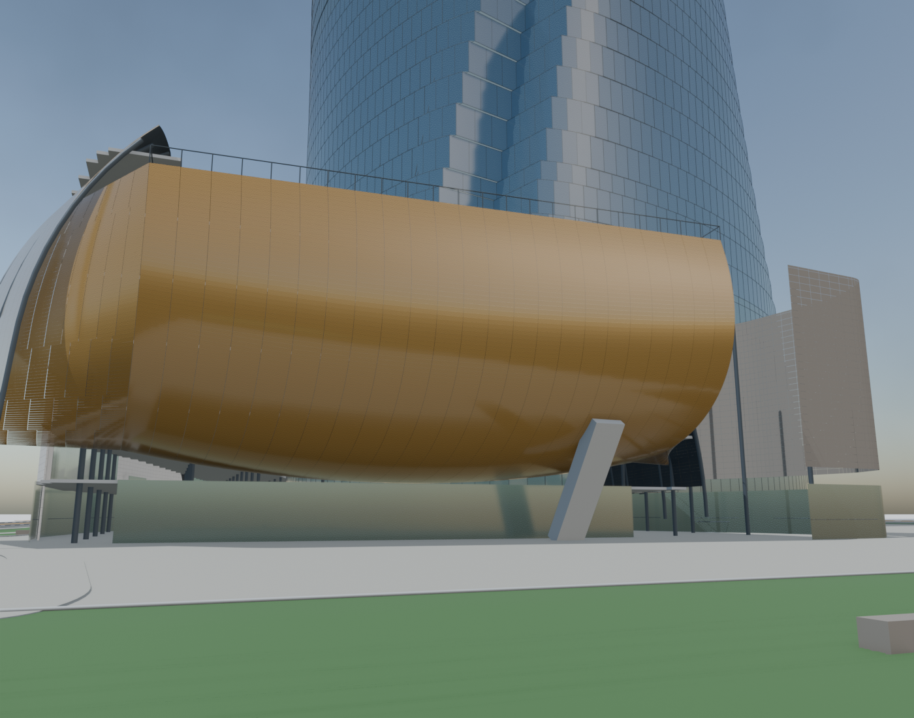
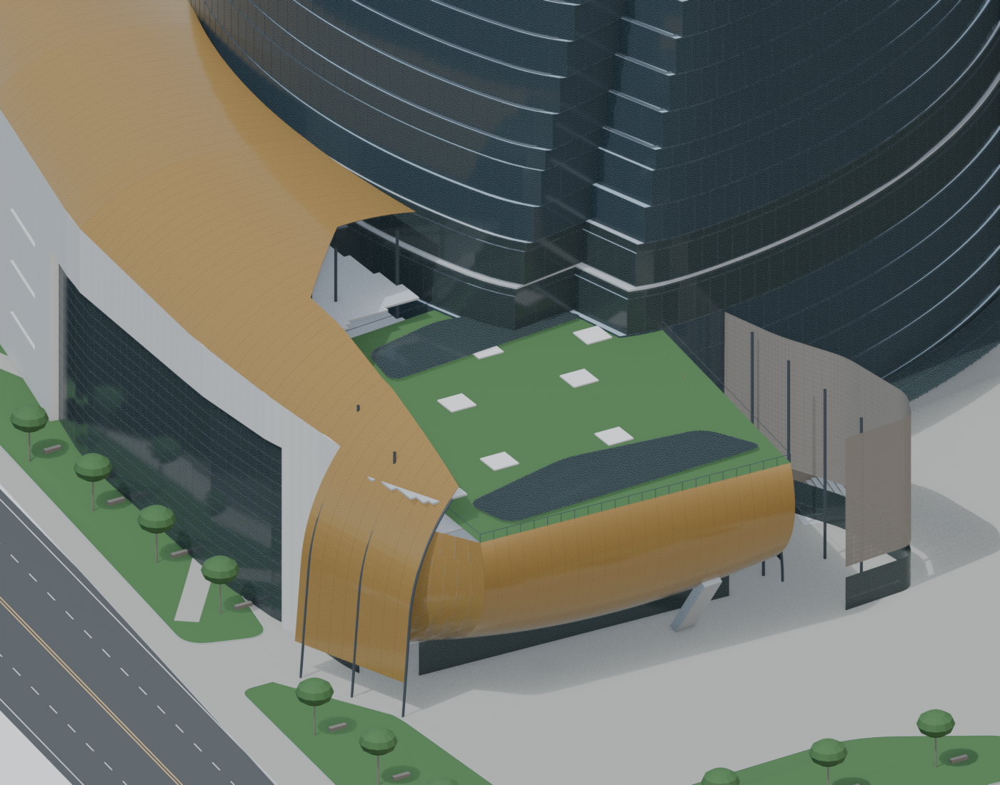
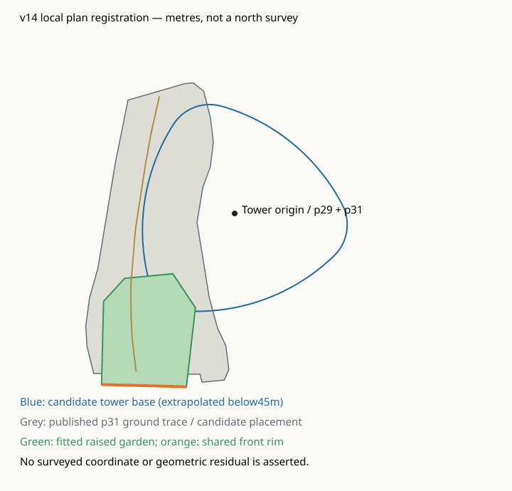
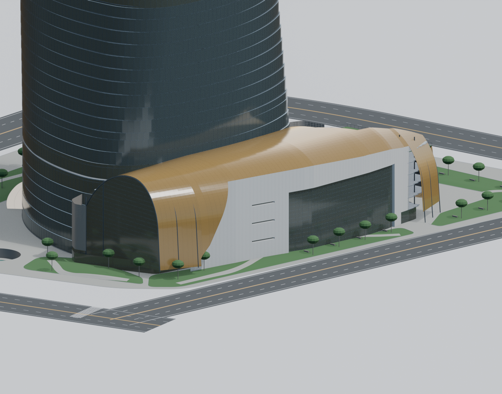

SWA一手图库，Jonnu Singleton-0013 · 未做虚构相机标定。右图为核验临时隐藏近处树冠/树干；保存模型仍保留这些对象。


原图来自SWA自身图库，摄影Jonnu Singleton；无标尺/摄影日期。抬升、通行空间、可见斜撑是图像支持的构造关系，模型曲率/净空/退進尺寸为候选。原照片通过其原URL引用，仓库没有图像副本。
SWA一手图库，Jonnu Singleton-0013 · 未做虚构相机标定。右图为核验临时隐藏近处树冠/树干；保存模型仍保留这些对象。

露台与抬升包覆共享前沿，原落地封闭玻璃撤去，商业地面接口向后退。整体塔楼/裙房未因未经标定照片作任意旋转或平移。

同一局部坐标中的图纸锚点与模型A基部：软件配准检查不能替代竣工测绘。A基部是45m母曲线外推，实际首层/北向仍需CAD。

另一端封闭玻璃拱口、临街石材入口保留；其坐标和局部分区仍为照片拟合。
